👆 이건 교육의 목차 이미지 입니다.
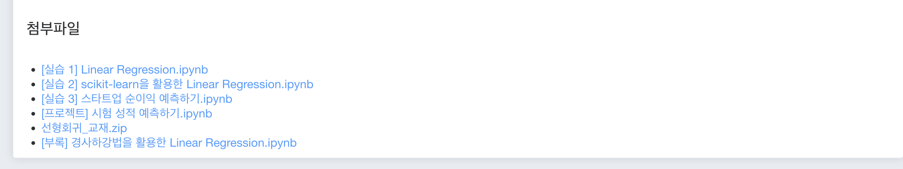
👆 이건 교육 때 진행한 첨부파일 입니다.
📚 1주차 Linux (2026.10.12 Mon ~ 2026.10.14 Wed) | Total : 3 days
📕 C. Linux Shell Script, Network (2026.10.14 Wed)
📃 a. Shell Script (쉘 스크립트)
1. 개념
- Shell은 사용자와 Linux 운영체제 사이에서 명령어를 전달하는 인터페이스다.
- Shell Script는 여러 개의 Shell 명령어를 파일에 작성하여 순서대로 실행하는 프로그램이다.
- 반복적으로 입력해야 하는 명령어를 하나의 파일로 만들어 실행할 수 있다.
- 시스템 관리, 파일 관리, 서버 점검, 프로그램 실행 및 자동화 작업에 활용된다.
2. Shell과 Shell Script의 차이
| 구분 | 설명 | 예시 |
|---|---|---|
| Shell | 명령어를 입력하고 실행하는 환경 | Bash |
| Shell Command | Shell에서 실행하는 개별 명령어 | ls, pwd, mkdir |
| Shell Script | 여러 명령어를 작성한 스크립트 파일 | backup.sh |
| Bash | Linux에서 널리 사용하는 Shell의 한 종류 | Bash Shell |
3. Shell Script 기본 구조
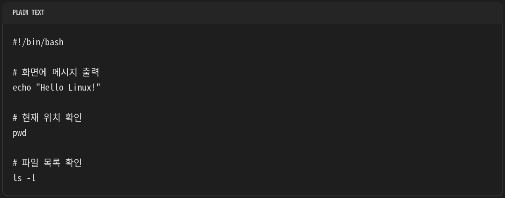
PLAIN TEXT 코드
주요 구성 요소
| 요소 | 설명 |
|---|---|
#!/bin/bash | 스크립트를 Bash로 실행하도록 지정하는 Shebang |
# | 주석 작성 |
echo | 문자열이나 변수 값 출력 |
pwd | 현재 작업 디렉터리 확인 |
ls -l | 파일 및 디렉터리 목록 확인 |
4. Shell Script 실행 방법
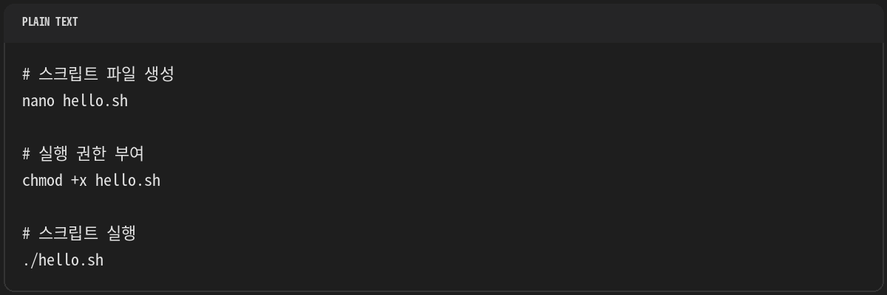
PLAIN TEXT 코드
실행 권한을 부여하지 않고 Bash를 통해 직접 실행할 수도 있다.
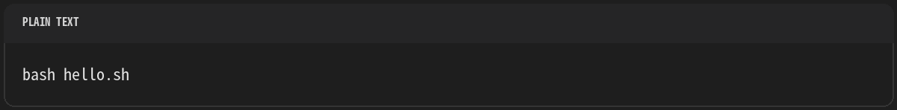
PLAIN TEXT 코드
5. 실습 예제
다음 코드를 system_check.sh 파일에 작성한다.
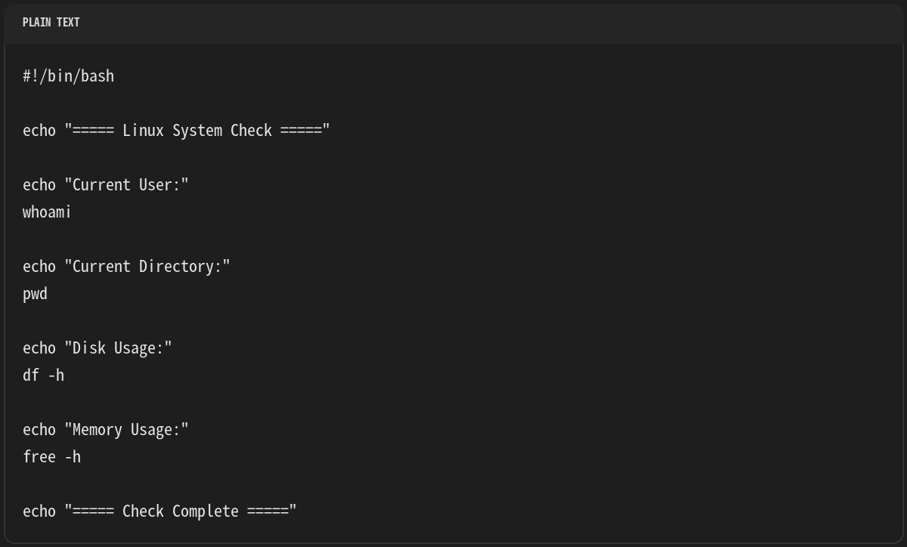
PLAIN TEXT 코드
실행 결과에는 현재 사용자, 작업 디렉터리, 디스크 사용량, 메모리 사용량 등이 표시된다.
6. 핵심 정리
- Shell은 명령어를 실행하는 인터페이스다.
- Shell Script는 여러 명령어를 하나의 파일로 묶어 실행하는 방식이다.
#!/bin/bash는 Bash를 사용하겠다는 의미다.chmod +x는 파일에 실행 권한을 추가한다.- Shell Script는 반복적인 시스템 관리 작업을 자동화하는 데 유용하다.
📃 b. Variable (변수)
1. 개념
- 변수는 데이터를 저장하고 필요할 때 다시 사용할 수 있도록 하는 이름이다.
- Shell Script에서는 변수에 문자열이나 명령 실행 결과 등을 저장할 수 있다.
- Python과 비슷한 개념이지만, Bash에서는 변수에 값을 대입할 때
=양쪽에 공백을 넣지 않는다. - 변수의 값을 사용할 때는
$를 붙인다.
2. 변수 선언 및 사용
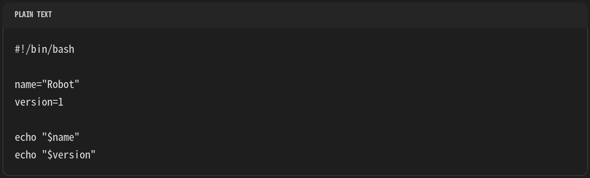
PLAIN TEXT 코드
출력 결과:
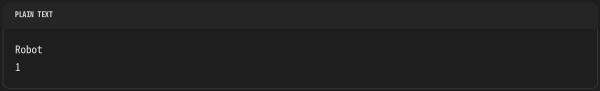
PLAIN TEXT 코드
3. 변수 사용 규칙
| 규칙 | 설명 | 예시 |
|---|---|---|
| 변수 선언 | 변수명에 값을 대입 | name="Robot" |
| 변수 사용 | $를 붙여 값 참조 | echo "$name" |
| 공백 주의 | = 양쪽에 공백을 넣지 않음 | name="Robot" |
| 문자열 처리 | 공백이 있는 문자열은 따옴표 사용 | name="Robot Simulation" |
| 환경 변수 | 프로세스에 전달할 환경 변수 설정 | export NAME="Robot" |
잘못된 예시:
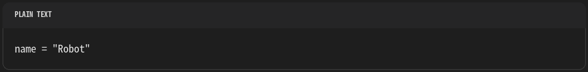
PLAIN TEXT 코드
올바른 예시:
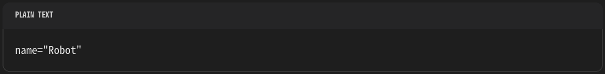
PLAIN TEXT 코드
4. 변수와 명령어 실행 결과
명령어의 실행 결과를 변수에 저장할 수도 있다.
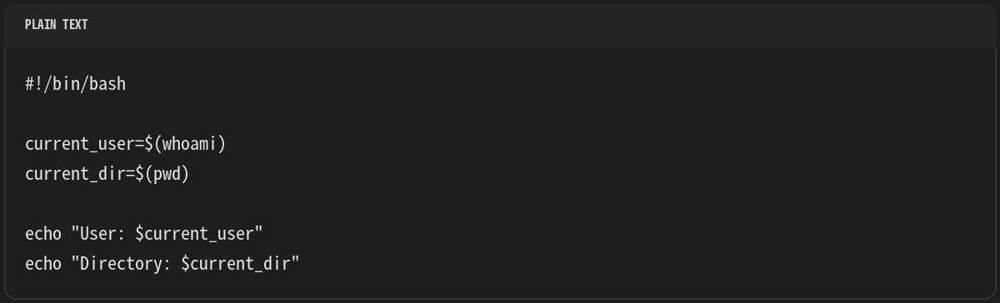
PLAIN TEXT 코드
$(명령어)는 해당 명령어를 실행하고 표준 출력 결과를 가져오는 명령 치환(Command Substitution) 문법이다.
5. 사용자 입력 받기
read를 사용하면 사용자에게 입력받은 값을 변수에 저장할 수 있다.
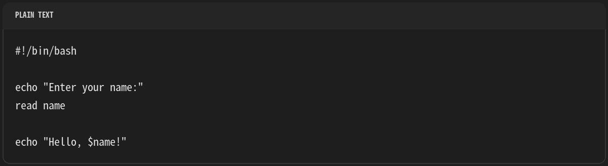
PLAIN TEXT 코드
6. Python과 Bash 변수 비교
| 구분 | Python | Bash |
|---|---|---|
| 변수 선언 | name = "Robot" | name="Robot" |
| 변수 사용 | print(name) | echo "$name" |
| 사용자 입력 | input() | read |
| 명령 실행 결과 저장 | 함수 호출 및 결과 대입 | $(command) |
7. 핵심 정리
- Bash 변수는
변수명=값형태로 선언한다. - 변수의 값을 사용할 때는
$변수명을 사용한다. - 명령어 실행 결과는
$(명령어)로 저장할 수 있다. - 환경 변수는
export를 통해 하위 프로세스에 전달할 수 있다.
📃 c. Conditional (조건문)
1. 개념
- 조건문은 특정 조건이 참인지 거짓인지 판단하여 실행할 코드를 결정하는 구문이다.
- 조건에 따라 서로 다른 작업을 수행할 수 있다.
- Shell Script에서는 주로
if,elif,else를 사용한다. - Python의
if,elif,else와 비슷하지만 Bash는 조건식과 명령어 작성 방식이 다르다.
2. 기본 구조
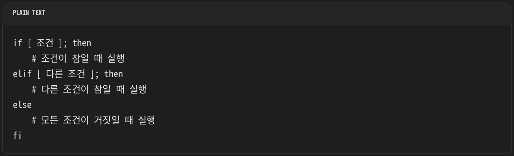
PLAIN TEXT 코드
| 문법 | 설명 |
|---|---|
if | 조건 검사 시작 |
then | 조건이 참일 때 실행할 코드 시작 |
elif | 추가 조건 검사 |
else | 모든 조건이 거짓일 때 실행 |
fi | 조건문 종료 |
3. 숫자 비교
| 연산자 | 의미 |
|---|---|
-eq | 같다 |
-ne | 같지 않다 |
-gt | 크다 |
-ge | 크거나 같다 |
-lt | 작다 |
-le | 작거나 같다 |
실습 예제:
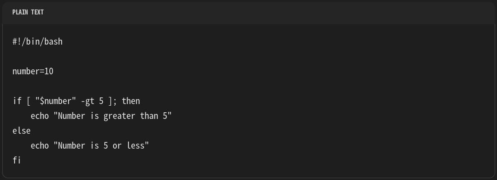
PLAIN TEXT 코드
출력 결과:
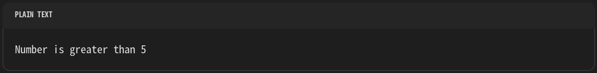
PLAIN TEXT 코드
4. 문자열 비교
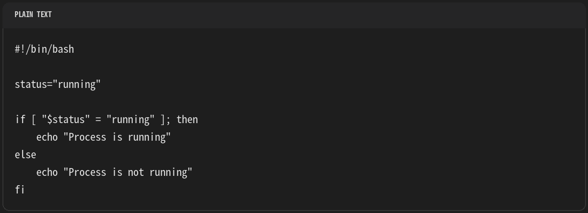
PLAIN TEXT 코드
| 연산자 | 의미 |
|---|---|
= | 문자열이 같은지 비교 |
!= | 문자열이 다른지 비교 |
-z | 문자열 길이가 0인지 확인 |
-n | 문자열 길이가 0보다 큰지 확인 |
5. 파일 및 디렉터리 확인
Linux에서는 파일이나 디렉터리의 존재 여부도 조건문으로 검사할 수 있다.
| 조건식 | 의미 |
|---|---|
[ -e "$path" ] | 파일 또는 경로가 존재하는가? |
[ -f "$path" ] | 일반 파일인가? |
[ -d "$path" ] | 디렉터리인가? |
[ -r "$path" ] | 읽을 수 있는가? |
[ -w "$path" ] | 쓸 수 있는가? |
[ -x "$path" ] | 실행할 수 있는가? |
실습 예제:
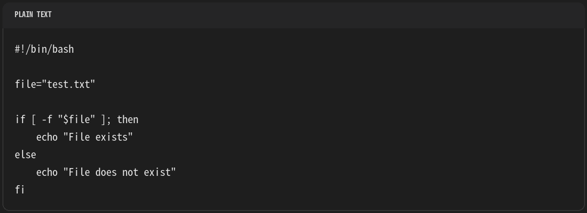
PLAIN TEXT 코드
6. 핵심 정리
if는 조건에 따라 실행할 코드를 분기한다.elif는 추가 조건을 검사한다.else는 앞선 조건이 모두 거짓일 때 실행한다.fi는 조건문의 끝을 의미한다.- 파일 존재 여부나 프로세스 상태 등을 검사해 시스템 관리 작업을 자동화할 수 있다.
📃 d. Loop (반복문)
1. 개념
- 반복문은 동일하거나 유사한 작업을 여러 번 실행하는 구문이다.
- 여러 파일을 순서대로 처리하거나 여러 서버의 상태를 확인할 때 활용할 수 있다.
- Bash에서는 주로
for,while을 사용한다. - Python의 반복문과 목적은 같지만 문법이 다르다.
2. for 반복문
정해진 목록에 있는 값을 하나씩 처리할 때 사용한다.
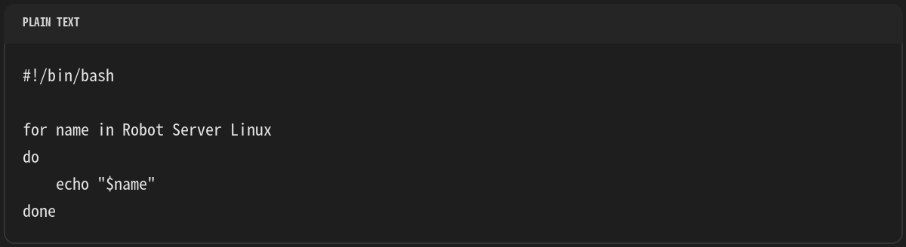
PLAIN TEXT 코드
출력 결과:
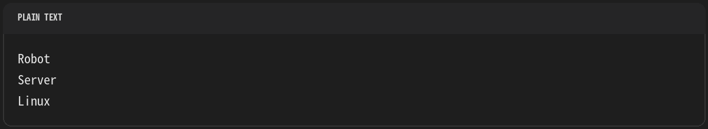
PLAIN TEXT 코드
3. 숫자 범위 반복
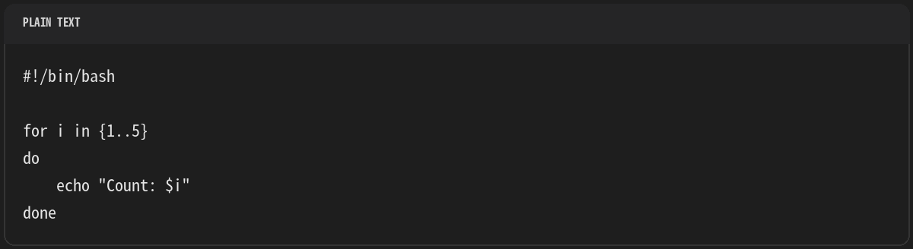
PLAIN TEXT 코드
출력 결과:
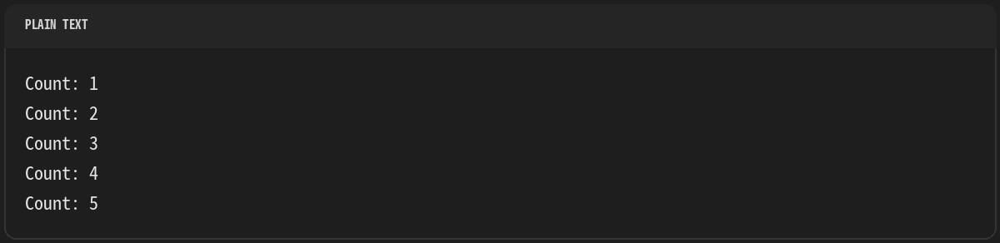
PLAIN TEXT 코드
4. while 반복문
조건이 참인 동안 반복해서 실행한다.
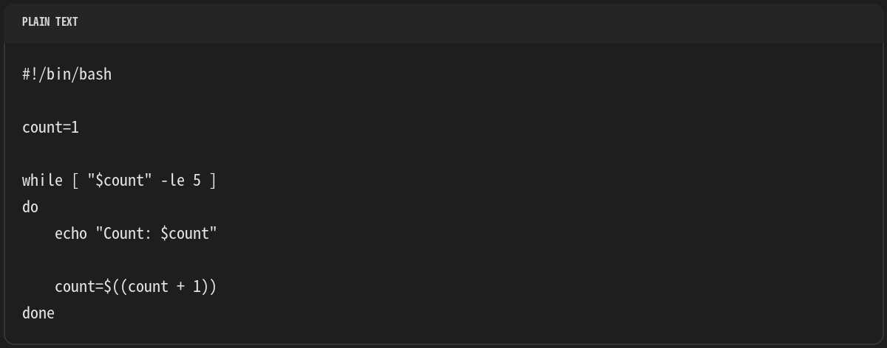
PLAIN TEXT 코드
$(( ))는 Bash에서 정수 산술 연산을 수행하는 문법이다.
5. break와 continue
| 명령어 | 설명 |
|---|---|
break | 반복문을 즉시 종료 |
continue | 현재 반복을 건너뛰고 다음 반복으로 이동 |
실습 예제:
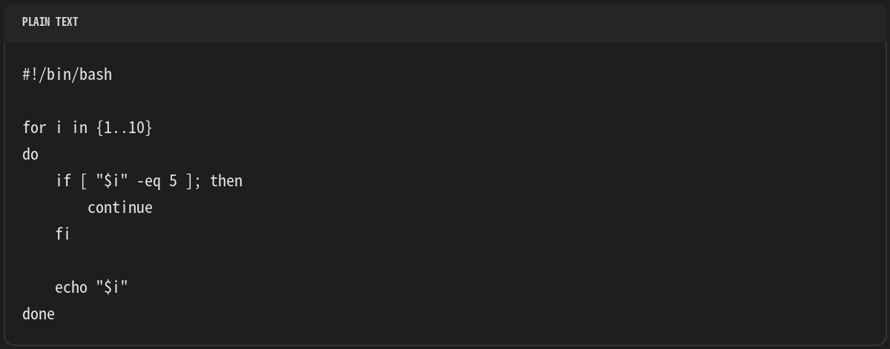
PLAIN TEXT 코드
위 코드는 숫자 1부터 10까지 출력하지만 5는 건너뛴다.
6. 파일 목록 반복 처리
여러 파일에 같은 작업을 수행할 수 있다.
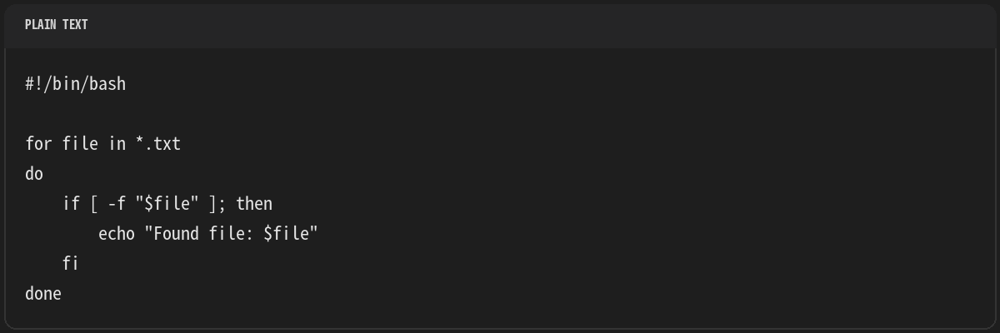
PLAIN TEXT 코드
현재 디렉터리에서 .txt 파일을 찾아 이름을 출력한다.
7. Python과 Bash 반복문 비교
| 구분 | Python | Bash |
|---|---|---|
| for | for i in range(5): | for i in {1..5} |
| while | while count <= 5: | while [ "$count" -le 5 ] |
| 반복 종료 | break | break |
| 다음 반복으로 이동 | continue | continue |
8. 핵심 정리
for는 목록이나 범위의 항목을 순서대로 처리할 때 사용한다.while은 조건이 참인 동안 반복한다.break는 반복문을 종료한다.continue는 현재 반복을 건너뛴다.- 반복문은 여러 파일이나 서버를 일괄적으로 점검할 때 유용하다.
📃 e. Network (네트워크)
1. 개념
- Network는 컴퓨터와 서버 등 여러 장치가 서로 데이터를 주고받을 수 있도록 연결한 시스템이다.
- Linux 서버에서는 네트워크 상태를 확인하고 IP 주소, 라우팅, DNS, 연결 상태 등을 점검하는 작업이 중요하다.
- 네트워크 명령어를 이용하면 연결 문제를 진단하고 원인을 파악하는 데 도움을 받을 수 있다.
2. 주요 네트워크 개념
| 용어 | 설명 |
|---|---|
| IP Address | 네트워크에서 장치를 식별하기 위한 주소 |
| IPv4 | 32비트 주소 체계. 예: 192.168.1.10 |
| IPv6 | 128비트 주소 체계 |
| Subnet Mask | IP 주소에서 네트워크 영역과 호스트 영역을 구분하는 데 사용 |
| Gateway | 다른 네트워크로 통신할 때 거치는 출구 역할의 장치 |
| DNS | 도메인 이름을 IP 주소 등으로 변환하는 시스템 |
| DHCP | 네트워크 설정을 자동으로 할당하는 프로토콜 |
| Port | 장치 내부에서 통신 대상 서비스나 애플리케이션을 구분하는 번호 |
| TCP | 연결 지향 방식으로 데이터 전달의 신뢰성을 제공하는 전송 계층 프로토콜 |
| UDP | 연결 설정 없이 데이터를 전달하는 전송 계층 프로토콜 |
3. 주요 네트워크 명령어
| 명령어 | 설명 |
|---|---|
ip addr | 네트워크 인터페이스와 IP 주소 확인 |
ip link | 네트워크 인터페이스 상태 확인 |
ip route | 라우팅 테이블 확인 |
ping | 대상과의 IP 연결 및 응답 확인 |
ss -tuln | TCP/UDP 소켓의 수신 대기 상태 확인 |
curl | URL을 대상으로 HTTP 등 다양한 프로토콜 요청 |
getent hosts | 시스템의 이름 조회 설정을 이용해 호스트 이름 확인 |
dig | DNS 조회 |
traceroute | 목적지까지의 네트워크 경로 확인 |
hostname | 시스템 호스트 이름 확인 |
※ 일부 명령어는 기본 설치되어 있지 않을 수 있다. 예를 들어 dig는 dnsutils 또는 해당 배포판의 관련 패키지를 설치해야 사용할 수 있다.
4. IP 주소 확인
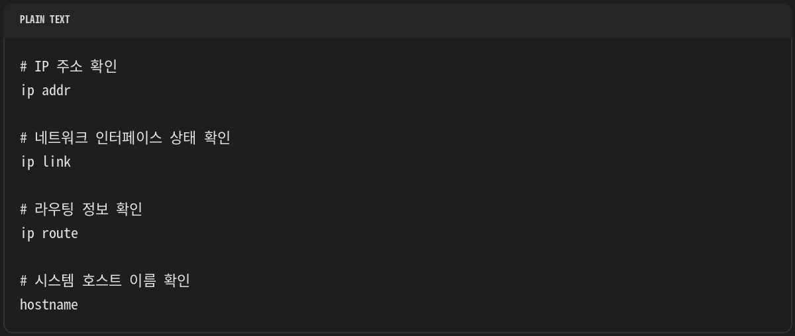
PLAIN TEXT 코드
5. 네트워크 연결 확인
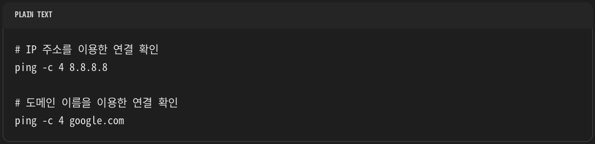
PLAIN TEXT 코드
두 명령어의 차이:
- IP 주소로 ping을 실행하면 DNS를 거치지 않고 IP 연결을 확인할 수 있다.
- 도메인 이름으로 ping을 실행하면 이름 조회와 네트워크 연결을 함께 확인할 수 있다.
- 첫 번째는 성공하고 두 번째는 실패한다면 DNS 문제가 원인일 가능성이 있다.
- 다만 방화벽이나 ICMP 차단 정책 때문에 ping이 실패할 수도 있으므로, 실패만으로 네트워크 연결 불량이라고 단정할 수는 없다.
6. 포트 및 연결 상태 확인
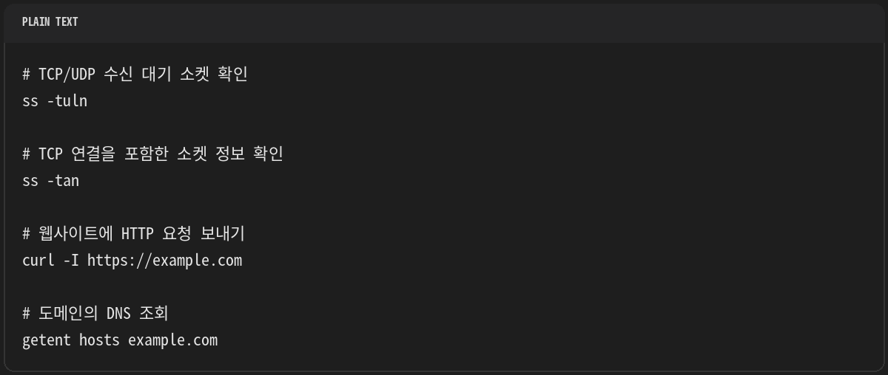
PLAIN TEXT 코드
ss -tuln 옵션:
| 옵션 | 의미 |
|---|---|
-t | TCP 소켓 |
-u | UDP 소켓 |
-l | 수신 대기 중인 소켓 |
-n | 포트 번호와 주소를 숫자로 표시 |
7. 네트워크 문제 해결 순서
네트워크 연결에 문제가 발생했을 때는 다음 순서로 점검할 수 있다.
ip link: 네트워크 인터페이스가 활성화되어 있는가?ip addr: 올바른 IP 주소가 설정되어 있는가?ip route: 기본 게이트웨이와 라우팅이 올바른가?ping: 게이트웨이나 외부 IP에 연결할 수 있는가?getent hosts: 도메인 이름이 정상적으로 조회되는가?ss -tuln: 필요한 서비스가 해당 포트에서 수신 대기 중인가?curl: 웹 서비스에 실제로 요청을 보낼 수 있는가?
8. 핵심 정리
ip addr는 IP 주소 확인,ip route는 라우팅 정보 확인에 사용한다.ping은 대상과의 연결 상태를 점검하는 데 활용한다.- DNS는 도메인 이름을 IP 주소 등으로 변환하는 시스템이다.
ss는 소켓과 포트의 상태를 확인할 때 사용한다.- 네트워크 문제는 IP 설정, 라우팅, DNS, 포트, 서비스 상태를 순서대로 점검하면 원인을 좁히기 쉽다.
📃 f. CRUD (Create, Read, Update, Delete)
1. 개념
- CRUD는 데이터를 관리할 때 사용하는 네 가지 기본 작업을 의미한다.
- 데이터베이스뿐 아니라 파일, 디렉터리, 사용자 계정, 시스템 설정 등을 관리할 때도 비슷한 개념으로 적용할 수 있다.
- 다만 Linux의 파일 관리 명령어가 데이터베이스의 CRUD와 완전히 같은 동작이나 보장 조건을 제공하는 것은 아니다.
2. CRUD의 의미
| 구분 | 의미 | 파일 관리 예시 |
|---|---|---|
| Create | 생성 | touch, mkdir |
| Read | 조회 및 읽기 | cat, less, ls |
| Update | 수정 및 갱신 | nano, vim, cp |
| Delete | 삭제 | rm, rmdir |
3. Create (생성)
파일이나 디렉터리를 생성한다.
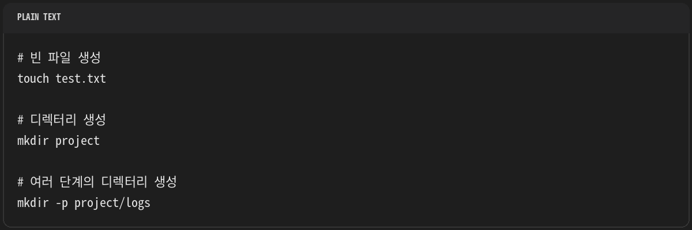
PLAIN TEXT 코드
4. Read (조회 및 읽기)
파일의 내용이나 디렉터리 목록을 확인한다.
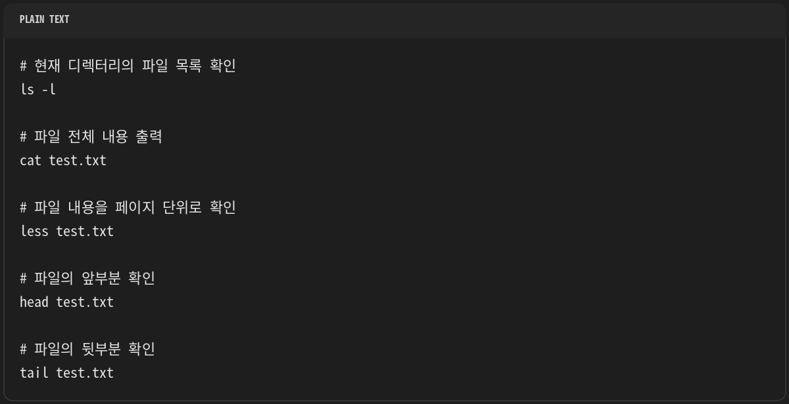
PLAIN TEXT 코드
5. Update (수정 및 갱신)
기존 파일의 내용을 수정하거나 데이터를 갱신한다.
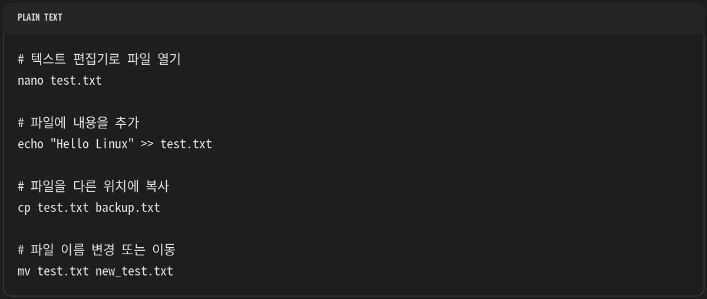
PLAIN TEXT 코드
주의할 점:
>는 파일에 내용을 기록하며, 기존 내용이 있으면 덮어쓴다.>>는 기존 내용 뒤에 새로운 내용을 추가한다.cp는 원본을 유지하면서 복사본을 만든다.mv는 파일을 이동하거나 이름을 변경한다.
6. Delete (삭제)
파일이나 디렉터리를 삭제한다.
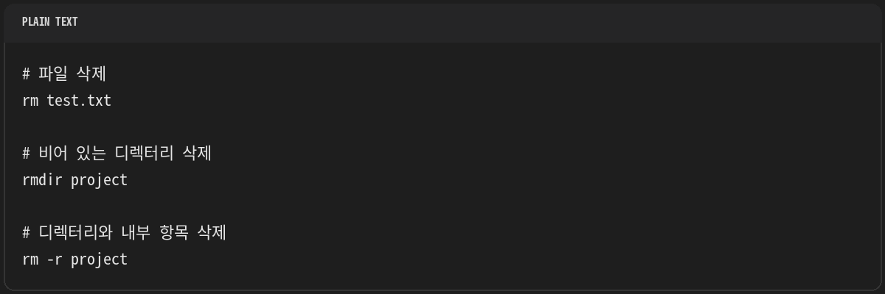
PLAIN TEXT 코드
※ rm으로 삭제한 파일은 일반적으로 휴지통으로 이동하지 않는다. 특히 rm -r은 하위 항목까지 삭제할 수 있으므로 실행 전에 경로를 확인해야 한다.
7. Undo와 Update의 차이
CRUD의 세 번째 항목은 Undo가 아니라 Update다.
| 용어 | 의미 | 예시 |
|---|---|---|
| Update | 데이터를 수정하거나 갱신 | 파일 내용 변경 |
| Undo | 이전 작업을 되돌림 | 편집기에서 Ctrl + Z |
| Delete | 데이터를 삭제 | 파일 삭제 |
Linux 명령어에는 모든 작업을 자동으로 되돌리는 공통 Undo 기능이 없다. 따라서 중요한 파일을 수정하거나 삭제하기 전에는 백업을 만들어 두는 것이 좋다.
8. 핵심 정리
- CRUD는 Create, Read, Update, Delete의 약자다.
- 파일 관리에서는
touch,cat,nano,rm등의 명령어를 활용할 수 있다. >는 덮어쓰기,>>는 내용 추가다.rm은 일반적으로 휴지통을 거치지 않고 파일을 삭제한다.- 중요한 작업을 되돌릴 필요가 있다면 백업이나 버전 관리 기능을 활용해야 한다.
📃 g. Automation (자동화)
1. 개념
- Automation은 사람이 반복적으로 수행하던 작업을 프로그램이나 스크립트가 자동으로 수행하도록 만드는 것이다.
- Linux에서는 Shell Script, Cron, systemd timer 등을 활용해 자동화를 구현할 수 있다.
- 서버 점검, 로그 정리, 백업, 프로그램 실행, 시스템 상태 확인 등에 활용된다.
- 자동화의 핵심은 반복 작업을 줄이고, 실행 절차를 표준화하며, 결과를 확인할 수 있도록 만드는 것이다.
2. 자동화에 활용되는 도구
| 도구 | 설명 | 활용 예시 |
|---|---|---|
| Shell Script | 여러 명령어를 스크립트로 묶어 실행 | 서버 상태 점검 |
| Cron | 정해진 시간에 명령어 실행 | 매일 새벽 백업 |
| systemd timer | systemd를 이용해 작업 예약 | 주기적인 서비스 점검 |
& | 명령어를 백그라운드로 실행 | 장시간 작업 실행 |
nohup | 터미널 연결이 끊겨도 작업을 계속 실행하도록 지원 | 장시간 스크립트 실행 |
ssh | 원격 서버에 접속해 명령어 실행 | 원격 서버 관리 |
3. Shell Script를 활용한 자동 점검
다음 예제는 현재 시스템의 사용자, 디스크, 메모리 정보를 확인하고 파일에 기록한다.
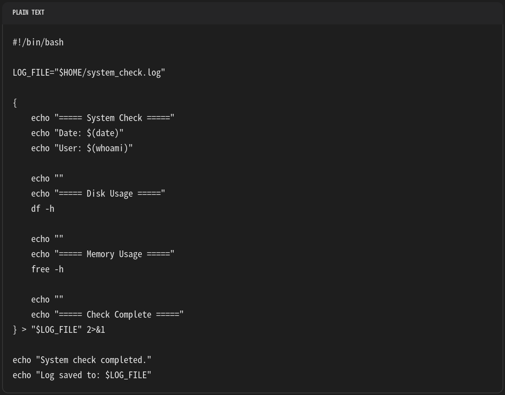
PLAIN TEXT 코드
코드 설명
LOG_FILE: 결과를 저장할 로그 파일 경로date: 현재 날짜와 시간 확인df -h: 디스크 사용량 확인free -h: 메모리 사용량 확인{ ... }: 여러 명령어를 하나의 명령 그룹으로 실행> "$LOG_FILE": 표준 출력을 파일에 기록하며 기존 파일 내용을 덮어씀2>&1: 표준 오류도 표준 출력과 같은 대상으로 보냄
실행 방법:
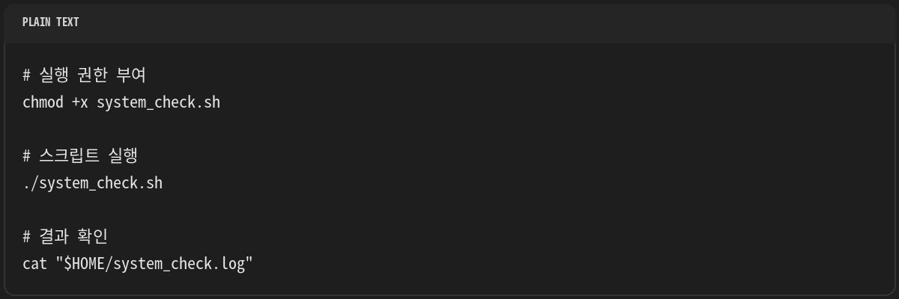
PLAIN TEXT 코드
4. Cron을 활용한 정기 실행
Cron은 지정한 시간에 명령어를 실행하는 작업 스케줄러다.
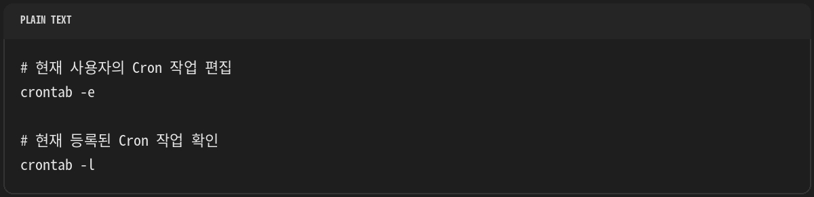
PLAIN TEXT 코드
Cron 설정 형식:
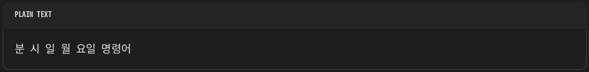
PLAIN TEXT 코드
예를 들어 매일 오전 9시에 시스템 점검 스크립트를 실행하려면 다음과 같이 설정할 수 있다.
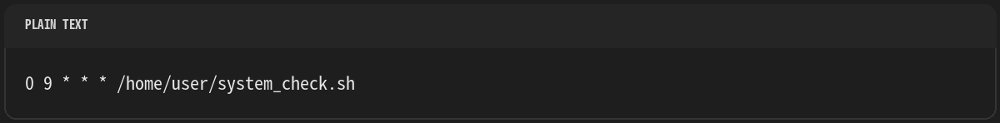
PLAIN TEXT 코드
위 예제의 의미:
| 항목 | 값 | 의미 |
|---|---|---|
| 분 | 0 | 0분 |
| 시 | 9 | 오전 9시 |
| 일 | * | 매일 |
| 월 | * | 매월 |
| 요일 | * | 요일 제한 없음 |
※ /home/user/system_check.sh는 예시 경로다. 실제 스크립트의 절대 경로로 바꿔야 한다. Cron에서는 일반 터미널과 환경 변수가 다를 수 있으므로 필요한 명령어의 절대 경로를 사용하고 로그를 남기는 것이 좋다.
5. 자동화 설계 시 고려할 사항
| 항목 | 설명 |
|---|---|
| 반복성 | 같은 작업을 여러 번 수행할 수 있는가? |
| 입력값 | 실행에 필요한 파일, 경로, 환경 변수 등이 준비되어 있는가? |
| 권한 | 작업을 수행하는 사용자에게 필요한 권한이 있는가? |
| 오류 처리 | 명령어 실행이 실패하면 어떻게 처리할 것인가? |
| 로그 | 실행 결과와 오류를 확인할 수 있는가? |
| 안전성 | 잘못된 경로나 명령어로 데이터가 손상되지 않는가? |
| 실행 주기 | 수동 실행, 정기 실행 중 어떤 방식이 적절한가? |
6. 로봇 시뮬레이션과의 연관성
Linux 자동화는 이후 ROS 2와 Isaac Sim을 학습할 때도 활용할 수 있다.
예를 들어 다음과 같은 작업을 자동화할 수 있다.
- 시뮬레이션 실행 전 필요한 환경 변수 설정
- ROS 2 노드 실행
- 여러 실행 명령어를 하나의 스크립트로 통합
- 실험 결과 및 로그 파일 정리
- GPU와 시스템 자원 사용량 확인
- 반복 실험을 위한 실행 명령어 표준화
단, 실제 Isaac Sim이나 ROS 2를 자동 실행할 때는 설치 환경, 실행 경로, 환경 변수, 의존성 등을 별도로 확인해야 한다.
7. 핵심 정리
- Automation은 반복 작업을 프로그램으로 자동화하는 것이다.
- Shell Script는 여러 명령어를 하나의 작업 흐름으로 묶는다.
- Cron은 지정한 시간에 명령어를 실행한다.
- 자동화할 때는 권한, 오류 처리, 로그, 백업을 함께 고려해야 한다.
- Linux 자동화는 서버 관리뿐 아니라 ROS 2 및 로봇 시뮬레이션 실험 환경을 구축할 때도 유용하다.
📌 1주차 Linux 핵심 복습
| 항목 | 핵심 내용 |
|---|---|
| Shell Script | 여러 명령어를 파일로 작성해 실행 |
| Variable | 데이터를 변수에 저장하고 재사용 |
| Conditional | 조건에 따라 실행 흐름을 분기 |
| Loop | 동일한 작업을 반복 실행 |
| Network | IP, 라우팅, DNS, 포트 및 연결 상태 점검 |
| CRUD | 데이터 생성, 조회, 수정, 삭제 |
| Automation | 반복 작업을 스크립트나 스케줄러로 자동화 |
이번 주 학습의 핵심
Linux 명령어를 개별적으로 사용하는 것에서 나아가, 변수·조건문·반복문을 활용해 명령어들을 하나의 자동화된 작업 흐름으로 구성할 수 있다는 점을 이해하는 것이 중요하다.